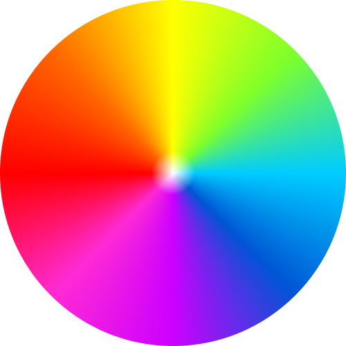

    <style>
       
@import url("https://stackpath.bootstrapcdn.com/font-awesome/4.7.0/css/font-awesome.min.css");

/* General styles */

body {
  font-family: 'Lato', sans-serif;
  margin: 0 auto;
}

svg {
  position: absolute;
}

button {
  background-color: #4CAF50;
  padding: 1rem;
}

a {
  text-decoration: underline;
}

h1,
figcaption {
  text-align: center;
  font-weight: 600;
  color: #494949;
}

h1 {
  font-size: 2.2rem;
}

h2 {
  font-size: 1.2rem;
}

figure {
  margin: 0 auto;
  padding: 1rem 0 1rem 0;
}

figcaption {
  text-transform: uppercase;
  font-size: 1.2rem;
  padding-bottom: 1rem;
}

.emphasized {
  font-weight: 600;
}


/* Page areas */

header,
#explanation,
#file-input,
#download-button,
#gallery,
#credits {
  padding: 2rem;
}

header {
  grid-area: head;
  display: flex;
  align-items: center;
  justify-content: center;
}
header h1, header img{
  max-height: 70px;
  margin: auto 10px;
}

header,
footer {
  color: white;
  background-color: #000000;
}

header>h1 {
  color: white;
}

main {
  margin: 0 auto;
  display: grid;
  grid-template-areas: 'explanation' 'file' 'download' 'gallery';
}

@media only screen and (min-width: 600px) {
  main {
    max-width: 1000px;
    grid-template-areas: 'explanation explanation' 'file download' 'gallery gallery';
  }
}

#explanation {
  grid-area: explanation;
}

#file-input {
  grid-area: file;
}

#download-button {
  grid-area: download;
}

#download-button button {
  box-shadow: 0 0 20px #ccc;
  border-radius: 15px;
  color: white;
  font-size: larger;
  margin: 20px;
}
#download-button button:hover {
  background-color: #3e8e41;
}

#gallery {
  grid-area: gallery;
  display: grid;
  grid-template-columns: repeat(auto-fit, minmax(300px, 1fr));
  column-gap: 10px;
  padding: 1rem;
  /* margin: 0 auto; */
}

.img {
  /* display: block; */
  /* width: 100%; */
  max-width: 300px;
  height: auto;
  margin: 0 auto;
}

.img--protanomaly {
  filter: url('#protanomaly');
}

.img--protanopia {
  filter: url('#protanopia');
}

.img--deuteranomaly {
  filter: url('#deuteranomaly');
}

.img--deuteranopia {
  filter: url('#deuteranopia');
}

.img--tritanomaly {
  filter: url('#tritanomaly');
}

.img--tritanopia {
  filter: url('#tritanopia');
}

.img--achromatomaly {
  filter: url('#achromatomaly');
}

.img--achromatopsia {
  filter: url('#achromatopsia');
}

/* Contributors Gallery */
#contributors {
  display: flex;
  align-items: center;
  flex-direction: column;
  margin-bottom: 20px;
}

#contributors > h2 {
  margin: 20px 0;
  font-size: 36px;
  font-weight: 700;
}

#contributors-gallery {
  max-width: 1100px;
  display: flex;
  justify-content: center;
  flex-wrap: wrap;
}

.contributor {
  display: flex;
  border: 1px solid #3d3d4d;
  border-radius: 15px;
  margin: 10px 20px;
  padding: 20px;
  align-items: center;
  flex-direction: column;
}

.contributor > img {
  border: 1px solid #3d3d4d;
  margin-bottom: 20px;
  height: 126px;
  width: 126px;
  border-radius: 50%;
}

.contributor > a {
  color: #494949;
  text-decoration: none;
  cursor: pointer;
}


/* Credits */

footer {
  margin: 0 auto;
  display: grid;
  grid-template-columns: repeat(auto-fit, minmax(300px, 1fr));
  padding: 2rem;
  text-align: center;
}


/* Buy me a coffee button */

.bmc-button img {
  height: 34px !important;
  width: 35px !important;
  margin-bottom: 1px !important;
  box-shadow: none !important;
  border: none !important;
  vertical-align: middle !important;
}

.bmc-button {
  padding: 7px 15px 7px 10px !important;
  line-height: 35px !important;
  height: 51px !important;
  text-decoration: none !important;
  display: inline-flex !important;
  /* color: #ffffff !important; */
  color: #000000 !important;
  /* background-color: #f471ff !important; */
  background-color: #f3d31d;
  border-radius: 5px !important;
  border: 1px solid transparent !important;
  padding: 7px 15px 7px 10px !important;
  font-size: 20px !important;
  letter-spacing: -0.08px !important;
  box-shadow: 0px 1px 2px rgba(190, 190, 190, 0.5) !important;
  -webkit-box-shadow: 0px 1px 2px 2px rgba(190, 190, 190, 0.5) !important;
  margin: 0 auto !important;
  font-family: 'Lato', sans-serif !important;
  -webkit-box-sizing: border-box !important;
  box-sizing: border-box !important;
}

.bmc-button:hover,
.bmc-button:active,
.bmc-button:focus {
  -webkit-box-shadow: 0px 1px 2px 2px rgba(190, 190, 190, 0.5) !important;
  text-decoration: none !important;
  box-shadow: 0px 1px 2px 2px rgba(190, 190, 190, 0.5) !important;
  opacity: 0.85 !important;
  color: #ffffff !important;
}

/* Language menu */

ul, ol{

  list-style:none;
  
  }
  
  .nav li a{
  
  background-color:#000;
  color:#fff;
  text-decoration:none;
  padding:10px 15px;
  display:block;
  }
  
  .nav li a:hover{
  
  background-color:#434343;
  
  }
  
  .nav li ul{
  
  display:none;
  position:absolute;
  min-height:140px;
  }
  
  .nav li:hover > ul{
  
  display:block;
  
  }
  
  .nav li ul li{
  
  position:relative;
  
  }
  
  .nav li ul li ul{
  
  right:-140px;
  top:0px;
  
  }
  
  .nav > li{
  float:left;
  }
    </style>
    <!-- Filter definitions -->
    <svg id="colorblind-filters">
      <defs>
        <filter id="protanomaly">
          <feColorMatrix in="SourceGraphic"
            type="matrix" 
            values="0.817 0.183 0 0 0
                    0.333 0.667 0 0 0
                    0 0.125 0.875 0 0
                    0 0 0 1 0" />
        </filter>
        <filter id="protanopia">
          <feColorMatrix in="SourceGraphic"
            type="matrix"
            values="0.567 0.433 0 0 0
                    0.558 0.442 0 0 0
                    0 0.242 0.758 0 0 
                    0 0 0 1 0"  />
        </filter>
        <filter id="deuteranomaly">
          <feColorMatrix in="SourceGraphic"
            type="matrix"
            values="0.8 0.2 0 0 0
                    0.258 0.742 0 0 0
                    0 0.142 0.858 0 0
                    0 0 0 1 0"  />
        </filter>
        <filter id="deuteranopia">
          <feColorMatrix in="SourceGraphic"
            type="matrix"
            values="0.625 0.375 0 0 0
                    0.7 0.3 0 0 0 
                    0 0.3 0.7 0 0
                    0 0 0 1 0" />
        </filter>
        <filter id="tritanomaly">
          <feColorMatrix in="SourceGraphic"
            type="matrix"
            values="0.967 0.033 0 0 0
                    0 0.733 0.267 0 0
                    0 0.183 0.817 0 0
                    0 0 0 1 0"  />
        </filter>
        <filter id="tritanopia">
          <feColorMatrix in="SourceGraphic"
            type="matrix"
            values="0.95 0.05 0 0 0
                    0 0.433 0.567 0 0
                    0 0.475 0.525 0 0
                    0 0 0 1 0"  />
        </filter>
        <filter id="achromatomaly">
          <feColorMatrix in="SourceGraphic"
            type="matrix"
            values="0.618 0.320 0.062 0 0
                    0.163 0.775 0.062 0 0
                    0.163 0.320 0.516 0 0
                    0 0 0 1 0"  />
        </filter>
        <filter id="achromatopsia">
          <feColorMatrix in="SourceGraphic"
            type="matrix"
            values="0.299 0.587 0.114 0 0
                    0.299 0.587 0.114 0 0
                    0.299 0.587 0.114 0 0
                    0 0 0 1 0"  />
        </filter>
      </defs>
    </svg>
    
    <main class="aa1" margin-left="0" style="place-items:center">
      
      <div id="file-input">
         
        <h2><span class="emphasized">Step 1.</span> Select an image file</h2>
        <input (input)="pickimage()"  type="file" id="img-picker" accept="image/*">
        <p>Gallery will replace the one below.</p>
      </div>
      
      <a href="" id="blank" style="display: none"></a>
      <div id="gallery" style="width:300%">
        <figure>
          <figcaption>Normal</figcaption>
          
        </figure>
        <figure>
          <figcaption>protanomaly</figcaption></figure>
        <figure>
          <figcaption>protanopia</figcaption></figure>
        <figure>
          <figcaption>deuteranomaly</figcaption></figure>
        <figure>
          <figcaption>deuteranopia</figcaption></figure>
        <figure>
          <figcaption>tritanomaly</figcaption></figure>
        <figure>
          <figcaption>tritanopia</figcaption></figure>
        <figure>
          <figcaption>achromatomaly</figcaption></figure>
        <figure>
          <figcaption>achromatopsia</figcaption></figure>
      </div>
    </main>
    
    
    <script src="../../../assets/colorblind/js/html2canvas.min.js"></script>
        <script src="../../../assets/colorblind/js/filters.js"></script>
        <script src="../../../assets/colorblind/js/contributors-gallery.js"></script>
  
